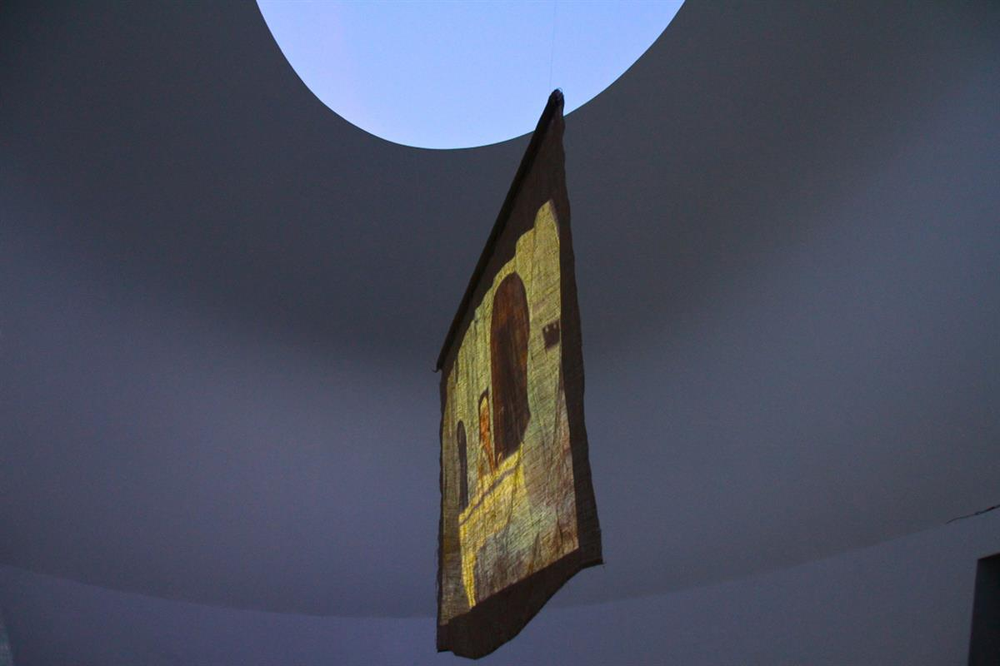

‘Sol Force’ Summer Solstice Art Event
in aid of Freedom from Torture
Roger Thorp has collaborated with Jesse Leroy Smith extensively over the last few years, particularly on The Pantheist and Bardo 7.08 both of which are included in Smith's Force Majeure exhibition at Tremenheere Sculpture Gardens.
For Sol Force he's creating a projection in the Turell Skyspace and a soundscape in collaboration with Jamie Mills
Biography
Roger Thorp is a British artist born in Chapel-en-le-Frith in Derbyshire in 1955. He currently lives and works in Cornwall.
Roger Thorp’s artwork consists of still images exhibited alongside complex, multi-media, immersive and participatory installations. Thorp’s work effectively transmits his enormous sensitivity towards the earth, humanity and spirituality, becoming a manifestation of deep joy and a proclamation of existence for those who forget where they are going.
After leaving film school, Roger Thorp started out as a runner in the film industry, moving on to work as Producer and PM on music videos for U2, The Clash, Iggy Pop and others. Thorp has directed programmes for NGO’s such as WWF, ILO and the Red Cross, working in Australia, Mongolia and the USA. He has also made two feature films.
Other work by Roger as a writer/director has been screened in Rome, Barcelona, Copenhagen, Oslo, Berlin and London. In 2004 he co-founded the art-house online gallery ‘Little Song Films’ and in 2015 he founded ‘The Olive Network’ a sophisticated web platform built to foster tolerance and understanding throughout diverse global communities by focusing on the positive long term contributions of charity, the arts and humanities. Roger exhibits his work internationally and he is represented by Anima-Mundi.
